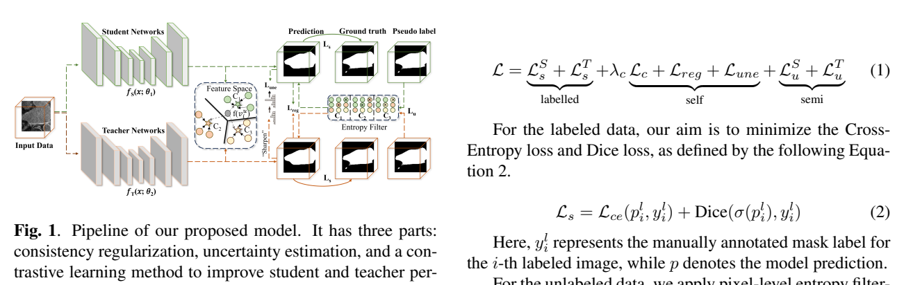

本篇未找到可可靠提取的方法流程图，请查看原文 PDF。
论文关注一个被作者称为 MiDSS 的新场景：标注数据仅来自单一域且数量很少，无标注数据同时来自源域和多个目标域 [p. 1][p. 2]。传统半监督医学图像分割（SSMIS）通常假设标注与无标注数据同分布；无监督域适应（UDA）虽处理域偏移，却依赖充足源域标注；半监督域适应（SSDA）虽同时有少量标注和域偏移，但标注源域数据较多、目标域单一 [p. 2][p. 4]。作者因此主张 MiDSS 更贴近临床多中心数据收集：少量标注来自一个中心，大量无标注来自多个中心 [p. 1][p. 2]。核心困难是域偏移下伪标签不可靠，自训练误差累积；作者的关键思路是先构造中间域缩小域差，再利用中间域信息改进无标注数据伪标签 [p. 2]。
设有 K 个数据域 {D_i}，训练集含 N 个来自单一域 D_j 的标注图像 {(x_i,y_i)} 和 M 个来自多个域的无标注图像 {u_i}，M>N；目标是模型在所有域（无论是否有标注）上分割良好 [p. 4]。方法基于 mean-teacher：教师 ^f 对弱增强无标注数据 u_w 产生概率图 ^p_w 和伪标签 ^q_w=argmax(^p_w)，学生 f 对强增强 u_s 预测 p_s；弱增强含裁剪、旋转、翻转、弹性形变，强增强另加颜色抖动和高斯模糊 [p. 4]。
统一复制粘贴 UCP 同时对标注数据 (x_w,y_w) 与无标注数据 (u_s,^p_w,^q_w) 施加两个方向的 Copy-paste，得到 u_s^in、u_s^out 及其混合概率图/伪标签；掩码 M_α 为随机单中心矩形区域，区域选择沿用 UniMatch 策略 [p. 4][p. 5]。与只做单向嵌入的 CP 相比，UCP 同时生成双向中间样本，以缓解误差累积 [p. 2]。
单向监督 L_in、L_out 用混合伪标签 ^q_w^in、^q_w^out 监督学生在中间样本上的预测，权重 w_i=1(max(^p_w^i)≥τ) 标记伪标签像素是否可靠；损失为加权交叉熵与 Dice 之和 [p. 5]。为反向利用中间域信息，教师对 u_w^in、u_w^out 预测并按 M_α 合并为 ^q_mg（式 5），再与 ^q_w 做像素级 XOR 得到一致性权重 w_ens，最终 L_sym 用 ^q_mg 监督 p_s [p. 5]。L_sym 在早期训练权重较低、后期快速增加，以保证中间域先学好再反哺无标注域 [p. 5]。
UCP 只做局部语义混合，忽略域间风格差异。作者用 FFT 取标注与无标注图像的幅度和相位，将无标注图像的低频幅度按掩码 M_β 混入标注图像幅度、保留标注相位，再 IFFT 得到风格迁移后的 x_u（式 9）；M_β 仅在中心 2βW×2βH 区域非零，混合比例 Φ(t)=t/t_total 随训练步数增大，即渐进注入风格 [p. 5][p. 6]。该操作是样本到样本，不需要域身份或风格聚类 [p. 6]。
可靠样本筛选：用教师伪标签 ^q_w 与学生伪标签 q_w 的 Dice 差异定义硬度 h=1−Dice(^q_w,q_w)；h<γ 的样本进入容量 K 的队列 Q，γ 动态更新为队列内最大硬度；若某轮无样本入选，则 γ=max(γ0,δγ)，δ=1.0005 [p. 6]。可靠样本的三元组 (u_w^r,^p_w^r,^q_w^r) 替代标注数据参与式 (2) 的 UCP，从而在任意域之间生成更多样中间样本 [p. 6]。
不可靠样本：每批选硬度最高者为 u_w^ur；将 ^q_w^ur 的前景与 y_w 前景做像素 OR 后取包围盒 M_ur=Box(^q_w^ur⊕y_w)，只把标注数据区域嵌入不可靠样本，不要求反向 CP，以保留困难样本背景并提供精确前景监督 [p. 7]。
L_s 为标注数据的 CE+Dice；总损失 L_total=L_s+λ(L_in+L_out+λL_sym)，λ(t)=e^{−5(1−t/t_total)}，使 L_sym 的系数 λ² 早期增长较慢 [p. 7]。
作者声称：首次研究 MiDSS 场景；提出基于 UCP 的 SymGD 训练策略；提出 TP-RAM 使域知识迁移全面稳定；扩展版相对会议版 UST 增加可靠样本多样性生成与不可靠样本精细训练 [p. 2]。我的理解是：核心新颖性在于把“中间域”从单向 CP 扩展为双向构造、风格渐进混合和可靠/不可靠样本分流，并用 SymGD 把中间域预测反哺无标注数据；这更像对 BCP/UST 思路的系统化扩展，而非全新学习范式。
四个公开数据集：Fundus（4 中心，视杯/视盘；20 标注、769 无标注、271 测试，256×256）、Prostate（6 源，T2 MRI；40 标注、1470 无标注、357 测试，384×384）、M&Ms（4 厂商，LV/MYO/RV；20 标注、3427 无标注、863 测试，288×288）、BUSI（良/恶性两域；64 标注、454 无标注、129 测试，256×256）[p. 7][p. 8, Table II]。训练用 RTX 3090、SGD 动量 0.9、权重衰减 0.0001、初始学习率 0.03、batch size 8（4 标注+4 无标注），Fundus/BUSI 迭代 30000，Prostate/M&Ms 60000；β=0.01、τ=0.95 [p. 8]。评价指标 DC、JC、95% HD、ASD [p. 9]。
Fundus 20 标注：UST-RUN 平均 DC 88.09，作者称至少比其它方法高 4.70%；10 标注时仍保持优势 [p. 9][p. 10]。Prostate 40 标注：UST-RUN 平均 DC 88.13，JC 79.47，HD 11.39，ASD 4.80；20 标注时相对 UST 略有下降 [p. 10, Table IV]。M&Ms 20 标注：UST-RUN 平均 DC 85.04，优于对比方法，但与上界 88.28 仍有差距，作者归因于上界使用远多于 20 的标注 [p. 10, Table V]。BUSI 64/129 标注：UST-RUN 相对 UST 的 DC 分别提升 1.93% 和 2.19% [p. 10, Table VI]。摘要称 Prostate 上 Dice 提升 12.94%，正文未在该处给出对应比较对象与条件的完整说明，需以表格为准 [p. 1][p. 10]。
Fundus 消融（Table VIII）：#1 仅 UCP 平均 DC 85.78；#3 加 SymGD 86.89；#4 加 TP-RAM 86.95；#5 加 RAM 86.82；#6 加 TP-RAM+SymGD 87.66；#7 再加可靠样本 87.91；#8 再加不可靠样本 88.09（正文一处写 88.15%，与表 88.09 不完全一致）[p. 10][p. 11]。这说明 SymGD 与 TP-RAM 各自有效，可靠/不可靠模块带来进一步增益。参数敏感性：β=0.01、τ=0.95 最佳；Prostate 上 δ=1.0005、K=20 最佳 [p. 11, Table IX/X]。粘贴区域策略：随机区域优于 Label-Guided、Pseudo-Guided、Dual-Guided，作者解释语义不连续反而增加中间样本多样性 [p. 11, Table XI]。随机选可靠/不可靠样本均下降：Rand-RUN 20 标注 DC 77.07，完整 UST-RUN 84.79 [p. 11, Table XII]。可靠样本分析显示其平均 Dice 持续高于全部无标注样本，约每 epoch 选 40 个；1470 个无标注样本中约 500 个从未被选中 [p. 12, Fig. 12]。
支持的结论：在四个数据集、给定标注预算下，UST-RUN 多数设置优于 SSMIS、UDA 和 SAM 微调基线；消融支持 UCP、SymGD、TP-RAM、可靠/不可靠样本模块各自有贡献。作者报告的限制较少；从证据看，M&Ms 与上界差距明显，Prostate 20 标注时相对 UST 退化，说明极少标注下稳定性仍有限。缺失证据：未报告跨数据集统一超参搜索成本、训练时间/显存、多次随机种子以外的统计检验；部分表格数字在正文中难以逐项核对，摘要的 12.94% 提升缺少明确基线条件。
按文中报告：mean-teacher + U-Net；弱增强裁剪/旋转/翻转/弹性形变，强增强加颜色抖动与高斯模糊；UCP 用 UniMatch 区域选择；β=0.01、τ=0.95、δ=1.0005、K=20；SGD lr=0.03、momentum=0.9、weight decay=0.0001、batch 8（4+4）；Fundus/BUSI 30000 步，Prostate/M&Ms 60000 步；λ(t)=e^{−5(1−t/t_total)} [p. 4][p. 7][p. 8][p. 11]。未报告：具体数据划分文件、EMA 衰减率、U-Net 通道数、随机种子数量、推理是否用测试时增强、可靠队列的初始化细节。代码链接为 https://github.com/MQinghe/UST-RUN [p. 1]。
原论文流程图 · Figure 1 · PDF 第 2 页

Fig. 1. Pipeline of our proposed model. It has three parts: Here,ylrepresentsthemanuallyannotatedmasklabelfor consistencyregularization,uncertaintyestimation,andacon- i thei-thlabeledimage,whilepdenotesthemodelprediction. 原文来源
论文针对3D医学图像分割中像素级标注昂贵、标注数据稀缺的问题，采用半监督学习同时利用少量标注数据和大量无标签数据[p. 1]。作者指出，现有伪标签方法存在两个主要问题：一是伪标签噪声大，模型容易受错误预测误导；二是特征空间监督不足，许多方法只在标签空间施加监督，导致类间可分性不够[p. 1]。
作者还批评了常见的置信度阈值过滤：低分类分数的预测被丢弃，但部分错误预测仍可能有高分，造成过度自信或校准不良；而提高阈值会显著减少伪标签数量，可能引入类别不平衡并降低分割性能[p. 1]。因此，论文试图用双网络、不确定性估计和对比学习同时缓解伪标签噪声与特征空间监督不足。
模型由学生网络 fS(x;θ1) 和教师网络 fT(x;θ2) 组成，二者均为3D编码器-解码器结构，性能相近[p. 2]。训练数据包括标注集 Dl={(xli,yli)} 和无标签集 Du={xui}[p. 2]。图1展示了整体流程，包含一致性正则化、不确定性估计和对比学习三部分；图注说明 yli 为第 i 个标注图像的掩码标签，p 为模型预测[p. 2]。
总损失为： L = LSs + LTs + λcLc + Lreg + Lune + LSu + LTu（式1）[p. 2]。 其中上标 S/T 分别对应学生/教师，下标 s 表示监督损失、u 表示无标签伪监督损失；Lc 为对比损失，Lreg 为一致性正则化，Lune 为不确定性损失，λc 为对比损失权重。式1的排版在PDF中较拥挤，但各分组的含义可由正文和式2—式11推断。
对标注数据，作者最小化交叉熵和Dice损失： Ls = Lce(pli, yli) + Dice(σ(pli), yli)（式2）[p. 2]。 其中 pli 为第 i 个标注图像的预测，yli 为人工标注掩码，σ 为softmax。
对无标签数据，先逐像素计算熵： EntS = −Σc pui(c)·log2(pui(c)+ε)（式3）[p. 2]。 作者以所有像素熵值的第80百分位作为阈值 τ：若像素熵小于 τ，则用 argmax 生成伪标签；否则标记为 ignore[p. 2]。随后用带忽略索引的交叉熵计算无标签损失 Lu（式4），分母为有效像素数，B、H、W、D 分别为批大小、高、宽、深[p. 2]。
基于平滑性假设，同一输入经学生和教师网络应产生相似预测[p. 3]。作者用余弦距离约束两个子网输出： Lreg = 1 − cos(pSi, pTi)（式5）， cos(pSi,pTi)=pSi·pTi/(‖pSi‖‖pTi‖)（式6）[p. 3]。最小化该损失即减小学生与教师预测的余弦距离，以稳定训练。
作者用KL散度衡量学生预测与教师伪标签之间的差异，并构造不确定性损失： Lp(pSi,pTi)=Lce(pSi, σ(pTi/Tp))（式7）， Lune=e^(−DKL(pSi,pTi))·Lp + DKL(pSi,pTi)（式8）， DKL(pSi,pTi)=pTi·log(pTi/pSi)（式9）[p. 3]。 其中 Tp 为锐化softmax的温度超参数。直观上，KL散度越大表示越不确定，式8通过指数项降低该样本伪监督项的权重，同时把KL散度本身作为惩罚项。
作者将体素预测分为可靠与不可靠两类，用可靠体素特征均值构造前景原型 cf 和背景原型 cb： cf = (1/|Sf|)Σ f(vri)（式10）[p. 3]。 其中 Sf 为可靠体素集合，f(vri) 为可靠体素的特征嵌入。对比损失为： Lc = d(f(vui),cf) + d(f(vui),cb) + d(cf,cb)（式11）[p. 3]。 作者称该式用于将不确定体素对齐到相应类原型并增大不同类原型间距；但式11同时把不确定体素拉近前景和背景两个原型，且第三项直接拉近 cf 与 cb，这与正文“增大不同类原型距离”的表述存在方向上的不一致，论文未进一步解释符号或距离定义。
作者声称的贡献有三点：引入一致性正则化项以减小学生-教师预测差异并稳定训练；提出不确定性估计机制动态调整伪标签贡献；使用对比损失对齐不可靠像素特征与可靠类原型并增大类间原型距离[p. 2]。
从阅读角度看，方法的新颖性主要在于把熵过滤、KL不确定性加权、余弦一致性和原型对比组合进一个学生-教师框架；但各组件在已有半监督分割文献中并不全新，论文未提供与最接近组件的逐项隔离实验来证明组合的必要性。
LA数据集：100例3D钆增强MR体积，各向同性分辨率0.625×0.625×0.625 mm³，分5折、每折20例；按零均值单位方差归一化；训练随机裁剪为112×112×80，推理滑窗同尺寸、步长18×18×4[p. 4]。
Pancreas-CT：82例对比增强3D CT，体积512×512×D，D为181—466层，分4折；采用软组织窗（−120至240 HU），以胰腺为中心保留25体素边距裁剪；训练随机裁剪为96×96×6，推理滑窗16×16×16[p. 4]。
实现细节：沿用[20,14]采用ResNet和V-Net作为双流骨干；SGD优化器，权重衰减0.0001、动量0.9，初始学习率0.01，每2500次迭代降为1/10，共6000次迭代；每次迭代同时含标注与无标签样本，批大小为2；λc=0.1×e^(4(1−t/tmax)²)[p. 4]。评价指标为Dice、Jaccard、95HD和ASD[p. 4]。论文未明确报告标注数据比例或每折具体标注样本数，这是复现和公平比较的重要缺失信息。
LA（表1）：本文方法Dice 90.19±0.012%、Jaccard 82.42±0.019%、95HD 5.74±0.757体素、ASD 1.75±0.227体素；对比LUSEG的89.10±0.012%、81.62±0.024%、6.30±0.850、1.80±0.020，Dice提升1.09个百分点[p. 3]。表1中本文方法在四项指标上均为所列方法最优。
Pancreas-CT（表2）：本文方法Dice 75.25±0.014%、Jaccard 61.65±0.017%、95HD 11.15±1.604、ASD 2.49±0.293；LUSEG为76.40±0.018%、62.96±0.027%、10.69±1.603、2.79±0.0954[p. 3]。因此本文Dice低于LUSEG 1.15个百分点、Jaccard低1.31个百分点、95HD高0.46体素，但ASD低0.30体素。作者在正文中仅称在Pancreas上ASD表现可行，未强调Dice不及LUSEG[p. 4]。
图2给出LA和Pancreas的可视化对比，作者称在Pancreas上本文模型错误率低于MCF和LUSEG[p. 4]；但该结论仅基于图注和正文描述，未提供像素级误差统计。
表3在LA和Pancreas上分别移除Lune、Lreg或两者[p. 4]。LA上：仅Lune时Dice 88.84%、Jaccard 80.38%、95HD 6.76、ASD 2.16；仅Lreg时89.28%、81.02%、6.58、2.06；两者都用为90.19%、82.42%、5.74、1.75；两者都不用为89.03%、80.61%、6.68、2.24。可见LA上两项损失均带来提升，组合最佳。
Pancreas上：仅Lune时Dice 75.44%、Jaccard 61.80%、95HD 11.37、ASD 3.17；仅Lreg时73.92%、60.10%、10.13、2.17；两者都用为75.25%、61.65%、11.15、2.49；两者都不用为74.62%、60.83%、11.17、2.81。作者指出组合损失在Dice/Jaccard上低于仅用Lune，但在95HD/ASD上优于仅用Lreg，并推测复杂数据集上组合可能过拟合或引入噪声[p. 4]。该消融只覆盖两个损失项，未单独验证熵过滤阈值、对比损失Lc或λc设置的作用。
支持的结论：在LA上，完整模型在Dice、Jaccard、95HD、ASD四项指标上优于表1所列基线；消融支持Lreg和Lune在LA上均有正贡献。在Pancreas上，完整模型ASD优于LUSEG，但Dice和Jaccard不及LUSEG，因此“全面优于SOTA”的说法不适用于该数据集。
作者报告的局限：Pancreas上组合损失可能因结构复杂而泛化较差；未来将引入域适应处理多模态域偏移[p. 4—5]。
缺失证据：未报告标注比例/标注样本数；未与无熵过滤、无对比损失、不同τ或Tp的变体比较；未报告训练时间、显存或参数量；未给出统计显著性检验；表3中“✓”列与指标的对应关系在PDF文本中可辨认，但表头排版较乱，需以正文描述为准。式11与“增大类间距离”的文字存在不一致，论文未澄清。
已报告：LA 5折、Pancreas 4折；预处理与裁剪尺寸；ResNet+V-Net双流骨干；SGD（weight decay 0.0001，momentum 0.9）；初始学习率0.01，每2500次迭代×0.1，共6000次迭代；批大小2；λc=0.1×e^(4(1−t/tmax)²)；熵阈值τ取80百分位；评价指标Dice、Jaccard、95HD、ASD[p. 2—4]。
未报告：每折标注样本数量或比例、教师网络参数更新方式（如EMA）、Tp具体取值、对比损失中距离d的定义与温度、Lc的权重、数据增强细节、随机种子与重复次数、推理时是否使用教师或学生输出。复现时需向作者代码或补充材料确认这些设置，不能从正文推断。
本篇未找到可可靠提取的方法流程图，请查看原文 PDF。
论文关注半监督医学图像分割（SSMIS）：标注体素昂贵，现有方法主要做“前景导向建模”，即只分割目标器官/病灶，背景常被视为干扰或仅作为负类。作者观察到在部分切片中，背景建模的预测置信度高于前景建模，尤其在前景与背景体素高度相似的边缘区域；前景伪标签过滤低置信体素会引入与真值的偏差。作者据此主张：显式建模背景可为前景提供互补监督，提升前景预测置信度 [p. 1][p. 2]。
作者将这一观察与“互补标签”文献联系，但指出互补标签在 3D 医学分割中缺乏统一定义，且现有 SSMIS 工作尚未系统利用背景建模 [p. 2][p. 3]。
单目标分割中，真值 Y∈{0,1}^{w×h×d}，前景为 1、背景为 0；辅助互补背景标签按逐体素反转：Y_bg^i=1 若 Y^i=0，否则为 0（式 1）[p. 3][p. 4]。多目标分割先对多类真值做 one-hot，再对 one-hot 结果反转，得到 Y_{M,bg}∈{0,1}^{w×h×d×c}（式 2）[p. 4]。图 3 展示单目标直接反转、多目标先 one-hot 再反转的流程 [p. 4]。
教师仅用标注数据预训练。对标注数据 X_la、X_lb 做 CutMix：X_a=X_la⊙M+X_lb⊙(1−M)，X_b=X_la⊙(1−M)+X_lb⊙M（式 3–4），M 为二值掩码，零值区域尺寸 βw×βh×βd，β=2/3 [p. 4]。教师同时输出前景预测 Q_a^fg、Q_b^fg，背景预测 Q_a^bg、Q_b^bg，以及混合层预测 Q_a^M、Q_b^M；损失 L_fg、L_bg、L_M 分别按掩码区域监督（式 5–7），L_seg 为 Dice 与交叉熵的线性组合 [p. 4][p. 5]。图 4 给出教师预训练流程 [p. 5]。
教师为无标注数据生成前景伪标签 P_fg 与背景伪标签 P_bg。学生输入由标注与无标注数据 CutMix 得到：X̂_a=X_l⊙M+X_u⊙(1−M)，X̂_b=X_l⊙(1−M)+X_u⊙M（式 10–11）；监督标签同样混合真值与伪标签：Ŷ_fg=Y_fg⊙M+P_fg⊙(1−M)，Ŷ_bg=Y_bg⊙(1−M)+P_bg⊙M（式 8–9）[p. 4]。作者称背景建模使教师在约 200 次迭代内完成目标定位，并在约 800 次迭代内帮助修正欠分割/过分割（图 6）[p. 4][p. 5]。
学生共享编码器 E，接前景解码器 D_fg 与背景解码器 D_bg；混合层将两路预测沿通道拼接后经 1×1×1 卷积 ψ 得到 Q̂_a^M=ψ(concat(Q̂_a^fg,Q̂_a^bg))（式 12），并约束其接近前景预测 [p. 5]。图 7 展示学生框架 [p. 6]。推理时只用学生的前景分支 E+D_fg，因此不增加推理参数量与 FLOPs [p. 6][p. 7]。
区域级损失 L_rw 同时监督前景与背景、标注与无标注部分：L_fg^l、L_bg^l 为标注部分（式 13–14），L_fg^u、L_bg^u 为无标注部分（式 15–16），L_rw=L_fg^l+L_bg^l+α(L_fg^u+L_bg^u)（式 17），α 平衡标注与无监督损失 [p. 5][p. 6]。
双向一致性损失 L_bcl 包含两项：直接一致性 L_mse(Q̂_a^M,Q̂_a^fg) 拉近混合预测与前景预测；反向一致性 L_mse((1−Q̂_a^bg),Q̂_a^fg) 利用背景预测的补集约束前景，L_bcl=L_a^bcl+L_b^bcl（式 18–19）[p. 6]。总损失 L_total=L_rw+λL_bcl（式 20）[p. 6]。
附录 B 定义架构 A（双前景解码器）与架构 B（前景+背景解码器），在一致性约束 ||D_fg1−D_fg2||_2≤ε1 与反向一致性约束 ||D_fg+D_bg−1||_2≤ε2 下，给出熵界：Lemma 1 为架构 A 的下界（式 21），Lemma 2 为架构 B 的上界（式 24），Theorem 1 主张 H_B(p)≤H_A(p)−C（式 27–29）[p. 17][p. 18]。Theorem 2 给出条件：若 sign(∂L_task/∂μ)=sign(μ+q−1) 且 |q−0.5|>|μ−0.5|，梯度更新会降低前景熵（式 33–35）[p. 18]。这些是作者的理论主张；证明在附录中较简略，且依赖“共享编码器产生相似表示”等假设。
作者声称的贡献有三点：一是理论洞察——背景建模的高置信预测增强对应前景建模的置信度；二是提出 CVBM 框架，把背景建模作为辅助视角；三是提出双向一致性优化机制，使前景预测与背景引导预测相互对齐 [p. 2]。我的解读：核心新颖点在于把“背景/互补标签”从分类任务迁移到 3D/2D 医学分割，并用教师-学生+CutMix+双解码器实现；与 BCP 等方法的区别在于显式增加背景分支与反向一致性约束，而非仅做前景双分支或复制粘贴。作者称这是首次将背景建模引入 SSMIS [p. 2][p. 3]。
LA：100 例 3D 钆增强 MR，80 训练/20 测试，体素间距 0.625×0.625×0.625 mm [p. 7]。Pancreas-CT：82 例 3D 腹部 CT，62 训练/20 测试，分辨率 512×512，层厚 1.5–2.5 mm [p. 7]。ACDC：100 例心脏 MR，70/10/20 训练/验证/测试 [p. 7]。HRF：45 张彩色眼底图，27 训练/18 测试 [p. 7]。
实现：PyTorch 1.12.1，单张 NVIDIA 3090；总 batch size 8（4 标注+4 无标注）；SGD，初始学习率 0.01；λ 采用时间依赖高斯预热 λ(t)=0.1×e^{−5(1−t/t_max)^2}，β=2/3，α=0.5；3D 体数据零均值单位方差归一化；LA 子卷 112×112×80，Pancreas 96×96×96；LA 预训练/自训练 2k/15k 迭代，Pancreas 3k/15k；ACDC 取 256×256 2D patch，预训练/自训练 10k/30k；测试用滑动窗口，LA 步长 18×18×4，Pancreas 16×16×16 [p. 7]。
LA（表 I）：4/76 设置下 CVBM DSC 89.50%、Jaccard 81.07%、95HD 5.78、ASD 2.10；8/72 下 DSC 91.19%、Jaccard 83.87%、95HD 5.45、ASD 1.61。对比 BCP 8/72 的 89.62%/81.31%/6.81/1.76；全监督 VNet 80/0 上界为 91.47%/84.36%/5.48/1.50，CVBM 在 8 标签下 95HD 低于该上界 [p. 8]。
Pancreas（表 II）：6/56 下 CVBM DSC 83.65%、Jaccard 72.16%、95HD 4.48、ASD 1.30；12/50 下 DSC 84.57%、Jaccard 73.56%、95HD 3.90、ASD 1.21。全监督 VNet 62/0 为 83.89%/71.91%/5.08/2.00，因此 12/50 的 CVBM 在 DSC 上超过全监督上界 [p. 9]。
ACDC（表 III）：3/67 下 CVBM DSC 87.85%、Jaccard 79.03%、95HD 1.82、ASD 0.58；7/63 下 DSC 89.98%、Jaccard 82.30%、95HD 1.37、ASD 0.40。全监督 UNet 70/0 上界为 91.44%/84.59%/4.30/0.99；BCP 7/63 为 88.84%/80.62%/3.98/1.17 [p. 10]。
HRF（表 IV）：1/26 下 CVBM DSC 78.73%、Jaccard 65.07%、95HD 20.89、ASD 3.21；3/24 下 DSC 79.11%、Jaccard 65.69%、95HD 20.80、ASD 3.12；全监督 27/0 为 80.36%/67.38%/23.96/2.40。作者称 95HD 在 3/24 比 BCP 优 0.24、在 1/26 优 3.26 [p. 11]。
组件消融（表 V，LA 与 ACDC 10% 标签）：LA 上监督基线 DSC 82.74%，仅前景+背景双任务（#1）87.14%，加混合层（#2）89.62%，加 L_bcl（#4）91.19%；ACDC 对应 79.41%→81.04%→84.23%→89.98% [p. 12]。表 V 排版有错位，部分行标签与数值需对照正文理解。
结构消融（表 VI，LA 4/76 与 8/72）：双前景建模 4/76 DSC 88.45%、双背景 88.61%、CVBM 89.50%；8/72 双前景 90.03%、双背景 90.06%、CVBM 91.19% [p. 12]。
一致性消融（表 VII）：LA 4 标签基线 87.12%，+直接一致性 89.24%，+反向一致性 88.97%，+双向一致性 89.50%；ACDC 3 标签基线 85.73%，+直接 86.86%，+反向 86.03%，+双向 87.85% [p. 13]。
输出策略（表 VIII）：LA 前景结果 89.50%，混合层 90.12%，平均 (Q_fg+Q_bg)/2 为 90.47%；Pancreas 83.65%→84.02%→84.61%；ACDC 87.85%→87.98%→88.24% [p. 13]。作者为公平比较仍只报告前景分支。
标签比例（图 15）：LA 从 10% 到 100% 标签，DSC 91.19%→92.02%，Jaccard 83.87%→85.28%，95HD 5.43→5.07，ASD 1.61→1.46；10%→60% DSC 增 0.62%，60%→100% 仅增 0.21% [p. 13]。
前景比例消融（表 IX）：用真值掩码缩放前景 0.5–1.5，DSC 从 80.98% 升至 91.98%，95HD 从 10.29 降至 4.92 [p. 13][p. 14]。α 敏感性（图 16）：α=0.5 最优，过大或过小均下降 [p. 14]。
支持的结论：在四个数据集、多个标签预算下，CVBM 的 DSC/Jaccard 与部分距离指标优于所列 SOTA；消融支持双视角、混合层与双向一致性各自有贡献；推理只用前景分支，参数量/FLOPs 与 VNet 相同（LA/Pancreas 9.45M/47.17G 或 41.58G，ACDC 1.81M/3.00G）[p. 8][p. 9][p. 10]。
限制与缺失证据：论文未报告多随机种子均值/方差或显著性检验细节（表中 p-value 仅标 √，未给具体值）；伪标签质量（如前景/背景伪标签的 Dice/噪声率）未量化；理论部分依赖较强假设且证明简略；表 V、VII 等排版错位，部分数值与行标签对应关系需谨慎；HRF 全监督 95HD 反而高于部分半监督结果，作者未解释；未报告失败案例或跨中心泛化。作者在结论中提出未来探索无监督/主动学习，但未给出实验 [p. 14]。
已报告：PyTorch 1.12.1、单卡 3090、batch 8（4+4）、SGD lr=0.01、α=0.5、β=2/3、λ 高斯预热、3D 归一化、LA/Pancreas 子卷尺寸与迭代数、ACDC 2D patch 与迭代数、滑动窗口步长、CutMix 掩码比例 [p. 7]。未报告：优化器动量/权重衰减、学习率衰减策略、EMA 衰减系数、伪标签是否阈值过滤、数据划分随机种子、推理时是否做后处理、参数量统计是否含背景分支、训练总时长/显存。代码链接已给出（https://github.com/caoluyang0830/CVBM.git），但论文正文未说明超参数搜索范围与选择依据（除 α 外）[p. 1][p. 7][p. 14]。
本篇未找到可可靠提取的方法流程图，请查看原文 PDF。
半监督医学图像分割（SS-MIS）旨在用少量标注数据加大量未标注数据训练分割模型，以缓解医学标注昂贵的问题。作者将已有方法归为伪标签、一致性、原型学习三类，并指出原型学习路线的核心瓶颈：标注数据稀缺导致原型数量少、表达力弱，已有方法通常分别生成标注与未标注原型再融合，全局原型对类别嵌入的表示能力受限[p. 1]。此外，引入增强数据后，若沿用“将解码器各层特征上采样后生成原型”的做法，会带来很高的显存开销[p. 2]。论文因此提出EPCL-JUDA，目标是在Mean-Teacher框架下同时提升原型质量与生成效率。
整体流程见Fig. 1 [p. 4]（该图仅依据图注与正文描述，未读取图像内容）。
问题设定：数据集D分为标注子集D_l（N张，含标签）与未标注子集D_u（M张），图像尺寸H×W×D，类别数C；标注与未标注批大小均为2（总批大小4）[p. 3][p. 5]。学生网络用SGD/Adam类优化器训练，教师网络参数由学生参数的指数滑动平均（EMA）更新[p. 3]。
监督损失：对标注数据同时使用交叉熵、Dice、focal、IoU四种损失，并额外对四个分类器预测的平均值施加交叉熵，得到 L_seg = (L_ce+L_dice+L_focal+L_IoU)/4 + L_f [p. 3, 式(1)]。
联合不确定性量化（JUQ）：对未标注图像第p个体素的平均预测，先算熵不确定性 U_entropy = -Σ_c p log p [p. 3, 式(2)]；再用预测方差构造分布不确定性 U_Dis-norm = exp(-Var/ΣVar) [p. 3, 式(3)]，并对熵做归一化 U_entropy-norm = 1 - U/ΣU [p. 3, 式(4)]；两者相乘得 JUQ [p. 3, 式(5)]。JUQ作为逐体素可靠性权重，与原始伪标签逐元素相乘得到可靠伪标签 [p. 4, 式(6)]。作者称熵对噪声敏感，加入分布不确定性可提升对增强数据的鲁棒性[p. 3]。
增强原型学习： - 标注原型：将原始标注数据与CutMix增强标注数据拼接后送入学生网络，用标签做掩码平均池化（masked average pooling）得到类原型 p_c^l [p. 4, 式(7)]。 - 未标注原型：对原始与增强未标注数据分别用JUQ得到可靠伪标签与可靠性图，加权掩码池化得到 p_c^{u1} 与 p_c^{u2} [p. 4-5, 式(8)(9)]；再按系数λ1、λ2融合为 p_c^u [p. 5, 式(10)]。 - 全局原型：采用时间集成与高斯预热系数λ_con，按 p_c = ((2-λ_con)p_c^l + λ_con p_c^u)/2 逐步更新[p. 5, 式(11)]。
原型网络：由三层3D卷积组成，将特征逐步降维到类别数后再上采样，替代直接上采样高维解码器特征，以降低显存[p. 4]。
一致性损失：用余弦距离计算原型与特征的相似度图，对标注数据以标签监督 L_lc，对未标注数据以增强未标注伪标签监督 L_uc1、L_uc2 [p. 5, 式(12)(13)]；总损失 L = L_seg + L_lc + λ_con(L_uc1+L_uc2) [p. 5, 式(14)]。
作者声称的贡献有三点[p. 2]：(1) 通过联合不确定性量化与数据增强增加原型生成可考虑的样本数，提升全局原型质量；(2) 设计原型网络降低原型生成的显存消耗；(3) 在LA、Pancreas、Aortic Dissection上验证优于此前SOTA。
我的解读：方法的新意主要在“JUQ（熵×方差）”与“原型网络”两个工程化组件的组合，而非全新的半监督范式；其核心假设是增强数据能补充语义信息、方差能抑制熵的噪声敏感性。论文未从理论上证明JUQ优于单一熵度量，证据主要是消融与可视化。
数据集与划分：LA数据集100例3D MR，80训练/20验证，训练裁剪112×112×80，推理滑窗步长18×18×4 [p. 5]；Pancreas-NIH 82例CT，裁剪96×96×96，推理步长16×16×16 [p. 5]；TBAD 124例CTA，100训练/24测试，三类别（全主动脉、真腔、假腔）[p. 5]。LA与Pancreas用5折交叉验证，TBAD用3折[p. 5]。指标为Dice、Jaccard、95HD、ASD [p. 5]。
训练设置：V-Net骨干，学生训练14k迭代，Adam学习率0.001，批大小4（2标注+2未标注），RTX 4090，PyTorch；λ1=λ2=1，原型网络层数取3，一致性损失用交叉熵，标注数据默认CutMix [p. 5-6]。
主要结果： - LA（10%标注，8/72）：EPCL-JUQ Dice 91.52、Jaccard 83.76、95HD 5.49、ASD 1.73；对比BCP 89.62/81.31/6.81/1.76、Co-BioNet 89.20/80.68/6.44/1.90 [p. 6, Table I]。20%标注（16/64）：Dice 92.24、Jaccard 85.57、95HD 4.63、ASD 1.47，优于UPCoL的91.69/84.69/4.87/1.56 [p. 6]。 - Pancreas-NIH（10%，6/56）：Dice 83.16、Jaccard 70.49、95HD 5.97、ASD 2.85；20%（12/50）：84.45/73.61/5.12/2.43，优于Co-BioNet的84.01/70.00/5.35/2.75 [p. 6, Table II]。 - TBAD（20%标注）：Dice 80.89、Jaccard 69.14、95HD 3.45、ASD 0.71，优于UPCoL的76.19/64.45/4.82/1.33 [p. 7, Table III]。
消融（LA，20%标注，Table IV [p. 7]）：完整模型92.24/85.57/4.63/1.47；去掉JUQ改用熵为91.88/84.86/4.78/1.66；去掉数据增强降至91.38/84.22/6.59/2.34（降幅最大）；去掉原型网络为91.94/85.02/4.77/1.63。
显存（Table V [p. 7]）：解码器特征生成原型在第1/2/3层分别占18.65/15.93/14.51 GB，原型网络为4.21/6.54/6.65 GB。
未标注数据组合方式（Table VI [p. 7]）：四种组合中方式2（分别送入教师网络并构建多未标注原型一致性学习）最佳，Dice 92.24；其余为92.03、91.99、91.88，差异不大。
可视化：Fig. 2 [p. 6] 展示LA预测与URPC及GT对比，作者称EPCL-JUDA更接近标签；Fig. 3 [p. 8] 展示熵与JUQ可靠性图，作者称JUQ高确定性区域更稳定更广。以上仅依据图注与正文，未读取图像本身。
支持的结论：在三个数据集、两种标注比例下，完整模型在Dice/Jaccard上一致优于所列基线；消融支持数据增强是性能提升的主要来源，JUQ与原型网络带来较小但一致的增益；显存对比直接支持原型网络的效率主张。
局限与缺失证据：(1) 表中“EPCL-JUQ”与正文“EPCL-JUDA”命名混用，Table I-III未明确报告EPCL-JUDA与EPCL-JUQ的区别，易造成混淆[p. 6-7]；(2) 未报告参数量、训练时间、多次运行的均值/方差与显著性检验；(3) JUQ的方差项来源（多预测如何获得）在正文中描述不充分，式(3)的分母写法在文本中难以完全辨认[p. 3]；(4) 原型网络“进一步提升性能”的机制缺少直接证据，消融中去掉它仅下降约0.3 Dice；(5) 组合方式消融差异很小，作者也承认不显著[p. 7-8]；(6) 未讨论失败案例与跨中心泛化。
已报告：V-Net骨干；14k迭代；Adam，lr=0.001；批大小4（2+2）；EMA教师；λ1=λ2=1；原型网络3层3D卷积；一致性损失交叉熵；标注数据CutMix；LA/Pancreas 5折、TBAD 3折；LA裁剪112×112×80、滑窗步长18×18×4；Pancreas裁剪96×96×96、步长16×16×16；体素强度零均值单位方差归一化；RTX 4090。
未报告或无法确认：λ_con的具体预热曲线参数；JUQ中方差的计算方式与预测数量；原型网络各层通道数；优化器具体类型（正文一处写SGD、一处写Adam，存在不一致[p. 3][p. 5]）；TBAD旋转增强的具体参数；随机种子与代码（作者称将公开）。复现时应优先以第5页实现细节为准，并对上述不一致处做敏感性实验。
本篇未找到可可靠提取的方法流程图，请查看原文 PDF。
论文针对半监督医学图像分割（SSMIS）中的插值式扰动。作者指出，扰动是“双刃剑”：过度或不合适的扰动会引入噪声，使模型过拟合噪声并损害泛化 [p. 2]。现有方法要么采用随机比例插值（如 CutMix），要么采用固定比例插值（如 BCP），但作者认为它们没有让网络逐步适应标注与未标注数据之间的域偏移，因而学习效率不足 [p. 3]。作者用每 200 次迭代的 Dice 曲线作为观察证据：固定插值的 BCP 呈边际下降趋势，随机插值的 CutMix 更严重，非插值方法 SSNet 也被对比（图 1-1，[p. 3]）。此外，插值裁剪区域缺乏连贯内容，尤其靠近裁剪边界处，预测边界容易不准（图 1-2，[p. 3]）。据此，作者从“人类学习是渐进且周期性”的认知心理学类比出发，提出两个目标：设计能动态调整扰动的机制，以及让损失更关注边界区域 [p. 4]。
整体沿用 mean-teacher 框架：学生网络参数 θS，教师网络参数 θT 由 EMA 更新，θT^{t+1}=θT^t·δ+θS·(1−δ)，δ=0.99 [p. 7–8]。训练分两阶段。
预 warm 阶段：用教师网络对无标签图像 Xuj 生成伪标签 Ŷuj，学生同时用标注数据和无标签数据训练。损失为 Lstep1=Lstep1_s+λLstep1_u；有监督项是 Dice 与 CE 之和，无监督项是学生预测与教师伪标签之间的 Dice 与 CE 之和 [p. 8]。式 (4) 在原文中两项之间缺少加号，属于排版/笔误，按上下文应理解为两项相加。
第二阶段：P3M。先由教师网络得到概率图 Puj，二分类以 0.5 阈值、多分类以 argmax 得到伪标签 [p. 9]。插值采用 CutMix 式矩形掩码 Mc(t)∈{0,1}^{W×H}：随机选一个像素作为左上角 (w0,h0)，零值区域大小为 αW×αH，右下角为 (w0+αW,h0+αH) [p. 9–10]。混合图像与混合伪标签分别为： Xmix = Xuj⊙Mc(t)+Xsi⊙(1−Mc(t))， Ymix = Ŷuj⊙Mc(t)+Ysi⊙(1−Mc(t)) [p. 10]。
渐进曲线为 α1(iter1)=exp(iter1/S)+γ，其中 iter1 是当前迭代步，α1 表示插值中标注数据所占比例（即使用 CutMix 后无标签数据占据的区域），γ 是调整因子，S 被解释为模型反思并吸收新信息的能力（借自人类学习的遗忘率）[p. 8–9]。γ 与 S 由边界条件 α1(0)=0.25、α1(T)=0.9 解出。周期性形式为 α(iter)=α1(iter−n·T)，n 为当前周期数，T 为周期 [p. 9]。作者强调，合理的上下界比具体函数形式更重要 [p. 9]。
边界聚焦损失 Lbf。动机是插值边界缺少上下文纹理与形状信息，边界附近易错 [p. 10]。作者定义加权 CE 与加权 Dice：Lwce 对每个像素乘以 (1+μij)，Lwdice 同样以 (1+μij) 加权，μij 由 5×5 邻域 Ai,j 内预测与伪标签一致像素的比例计算：μij=1−ΣAi,j 1(ysij=psij)/ΣAi,j 1 [p. 10–11]。μij∈[0,1]，越大表示该像素与周围越不一致、越易错，因而惩罚越重。边界带掩码 Ml 由插值框左上/右下坐标 (h0,w0)、(h1,w1) 分别向外扩 ε、向内缩 ε 得到，最终区域为扩区域减缩区域并置 1 [p. 11]。第二阶段损失为 Lstep2=Ml⊙Lbf+(1−Ml)⊙Lseg，其中 Lbf 是边界带内的 wCE+wDice，Lseg 是其余区域的普通 CE+Dice [p. 11]。之后教师按 EMA 更新。
作者声称的贡献有三点：P3M 系统调节插值扰动，作为标注与未标注数据之间的桥梁；边界聚焦损失提升边界预测置信度；P3M 与 Lbf 可扩展到其他插值扰动方法 [p. 4–5]。我的解读是：核心新颖性在于把插值比例从固定/随机改为“有上下界、随迭代渐进、按周期重置”的调度，而非新的网络结构；Lbf 本质是难像素加权与边界带掩码的组合，其“边界”由插值框几何位置定义，而非真实解剖边界。
数据集与划分：LA 共 100 例 3D 钆增强 MR，按 80-20 划分训练/测试，训练随机裁剪 112×112×80，推理滑窗同尺寸、步长 18×18×4 [p. 12]。Pancreas-NIH 共 82 例 3D CT，按 62-20 划分训练/测试，训练裁剪 96×96×96，推理步长 16×16×4 [p. 12–13]。ACDC 共 100 例心脏 MRI，按 70-10-20 划分训练/验证/测试 [p. 13]。Decathlon Prostate 共 48 例多参数 MRI，其中 32 例有标注，按 24-8 划分训练/测试 [p. 13]。指标为 Dice、Jaccard、95HD、ASD [p. 13]。
训练设置：T=8000，ε=13；λ(t)=0.1·e^{−5(1−iter/maxiter)}；NVIDIA 4090，固定随机种子；Adam，初始学习率 3e−4，权重衰减 0.0001，多项式衰减 (1−iter/maxiter)^0.9 [p. 13]。3D 用 3D V-Net，batch size 4，预 warm 5k 迭代，第二阶段 55k；2D 用 U-Net，batch size 16，预 warm 15k，第二阶段 75k [p. 13]。Pancreas-NIH 按 CoraNet 设置学习率 0.001，标签比例 6% 与 10% [p. 13]。
主要结果（表 1，[p. 12]）：ACDC 5%（3 例）下 Ours Dice 89.71、Jaccard 81.88、95HD 1.85、ASD 0.64；10%（7 例）下 Dice 91.16、Jaccard 84.15、95HD 1.28、ASD 0.36。Decathlon Prostate 5%（23 例）下 Dice 65.63、Jaccard 58.46、95HD 7.45、ASD 2.45；10%（46 例）下 Dice 74.27、Jaccard 67.57、95HD 4.49、ASD 1.57。LA 5%（4 例）下 Dice 89.57、Jaccard 81.17、95HD 7.83、ASD 2.33；10%（8 例）下 Dice 90.83、Jaccard 83.30、95HD 7.02、ASD 1.92。Pancreas-NIH 6%（4 例）下 Dice 79.69、Jaccard 66.53、95HD 8.61、ASD 2.72；10%（6 例）下 Dice 81.70、Jaccard 69.39、95HD 7.71、ASD 2.10。作者称 Pancreas-NIH 6% 标签下 Dice 比此前 SOTA 高 14.25%（摘要与引言 [p. 4]），但正文 4.3 节又写“提升 11.37%” [p. 14]，两处数字不一致，需以表格或原文核对；表 1 中对应基线为 PMT 的 68.32，差值为 11.37，故 14.25% 的来源在正文中未交代清楚。全监督上界也列出：ACDC/Prostate 全监督 Dice 分别为 92.27/74.81，LA/Pancreas 为 92.26/82.31 [p. 12]。
消融（表 2，[p. 16]）：ACDC 5% 下，仅预 warm 为 Dice 60.58、Jaccard 49.64、95HD 26.97、ASD 11.59；加 P3M 后 87.58/78.56/2.85/1.13；再加 Lbf 后 89.71/81.88/1.85/0.64。LA 5% 下对应为 83.87/72.93/15.72/4.78 → 88.59/80.14/7.95/2.59 → 89.57/81.17/7.83/2.33。作者据此称 P3M 在 ACDC 上带来 Dice 约 20%、Jaccard 28.62% 的提升，Lbf 再带来 Dice 2.13%、Jaccard 3.32% 的提升 [p. 16]。
曲线与周期消融（表 3、表 4，[p. 17–18]）：作者比较 7 条曲线，红色（本文采用、受记忆曲线启发）在 ACDC 5% 上 Dice 89.71、LA 5% 上 89.57，均为最佳；绿色与黄色两条极端曲线表现较差（ACDC 上 84.11 与 84.99）[p. 17]。周期 T=4000/8000/12000/16000/75000 中，T=8000 在 ACDC 与 LA 上均最佳（ACDC Dice 89.71，LA Dice 89.57）；T=75000（仅一个完整周期）在 ACDC 为 88.52、LA 为 86.22，说明周期性有必要 [p. 18]。上下界消融（表 5，[p. 19]）显示上界 0.9、下界 0.25 最优（Dice 89.71），下界为 0 或上界过高均下降。
应用实验：把 P3M 用于 BCP 与 ClassMix，保持其掩码形状不变、仅调整插值比例；ClassMix 在 ACDC 5% 上 Dice 提升 28.30% [p. 20–21]。把 Lbf 用于 MUN 等三种插值方法，MUN 在 ACDC 5% 上 Dice 提升 5.55% [p. 5, p. 21]。图 6、图 7 给出定量对比，但正文未列出完整数值表。
支持的结论：在作者设定的四个数据集与标签预算下，P3Net 的 Dice/Jaccard 多数优于表中基线；消融较清楚地显示 P3M 是主要增益来源，Lbf 有额外但较小的增益；周期 T=8000 与上下界 0.25/0.9 的选择有表 4、表 5 的直接证据。
需要注意的局限与缺失证据：第一，Pancreas-NIH 的“14.25%”与正文“11.37%”不一致，且表 1 中 6% 标签下最强基线为 PMT 68.32，差值支持 11.37%，14.25% 的比较对象未说明 [p. 4, p. 12, p. 14]。第二，LA 上 Ours 的 HD95/ASD 并非全面最优（5% 时 HD95 7.83 高于 PMT 的 6.45；10% 时 HD95 7.02 高于 PMT 的 5.61），作者也承认在 HD95/ASD 上只是“略优或基本一致” [p. 12, p. 14]。第三，P3M 的曲线函数、上下界、周期均在验证集上选择，论文未报告独立验证集选择协议或多次随机种子方差，固定种子下的单次结果可能高估稳定性 [p. 13]。第四，Lbf 的边界带由插值框几何定义，ε=13 为固定像素值，未讨论其随分辨率/器官尺寸的敏感性；μ 的 5×5 邻域也缺少消融。第五，应用实验的增益（ClassMix +28.30%、MUN +5.55%）只给出图或摘要数字，正文未给完整表格与基线绝对值，复现与核验受限 [p. 20–21]。第六，图 1 的学习曲线仅作为动机示意，未说明统计方式与样本量 [p. 3]。
已报告的可复现要点：mean-teacher + EMA δ=0.99；两阶段训练；3D V-Net / 2D U-Net；Adam，lr 3e−4（Pancreas 0.001），weight decay 1e−4，多项式衰减指数 0.9；λ(t)=0.1·e^{−5(1−iter/maxiter)}；T=8000，ε=13，α 上下界 0.25/0.9；3D batch 4、预 warm 5k、第二阶段 55k；2D batch 16、预 warm 15k、第二阶段 75k；LA 裁剪 112×112×80、推理步长 18×18×4；Pancreas 裁剪 96×96×96、步长 16×16×4；数据划分如第 4 节 [p. 12–13]。
未报告或无法从正文确认的细节：γ 与 S 的具体解出数值未给出；伪标签是否经过不确定性过滤未说明；教师网络是单个还是集成（正文写“ensemble of teacher models”，但公式与流程按单教师描述）[p. 7]；插值框随机采样的具体分布与越界处理未说明；Lbf 中 ε 的单位与是否随 α 变化未说明；推理时是否使用 P3M 或仅用学生网络未明确；代码/超参搜索协议未提供。复现时应优先核对表 1 的基线数值与 14.25%/11.37% 的差异来源。